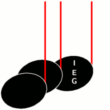
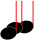
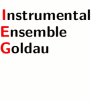

Über das IEG
Auftritte
Mitspielen
Probenplan
Presse
Gönner
|

Willkommen beim
Instrumental Ensemble Goldau
Seit 40 Jahren im Dienste der Begeisterung für die Musik:
Rund zwanzig Laienmusiker unter der Leitung von Letizia Zaugg.
Kürzlich:
Sonntag, 17. April 2022, 09:00 Uhr,
Ostermesse in der Mirche Goldau mit dem Kirchenchor Goldau
und Mozarts Missa brevis (KV259) und natürlich
mit Händels Hallelujah.
Sonntag, 2. Januar 2022, 10:00 Uhr,
Wort & Musik zum Neujahr in der ref. Kirche Oberarth
mit Pfarrer Urs Heiniger und dem IEG.
Kontakt:
Instrumentalensemble Goldau, Schöneggweg 44, 6410 Goldau
E-Mail
esther_bueeler@yahoo.com,
Tel 041 832 20 63
Bankverbindung: Schwyzer Kantonalbank,
IBAN CH13 0077 7002 8494 3016 9
Beachten Sie auch unsere Gönner
und Sponsoren.
|